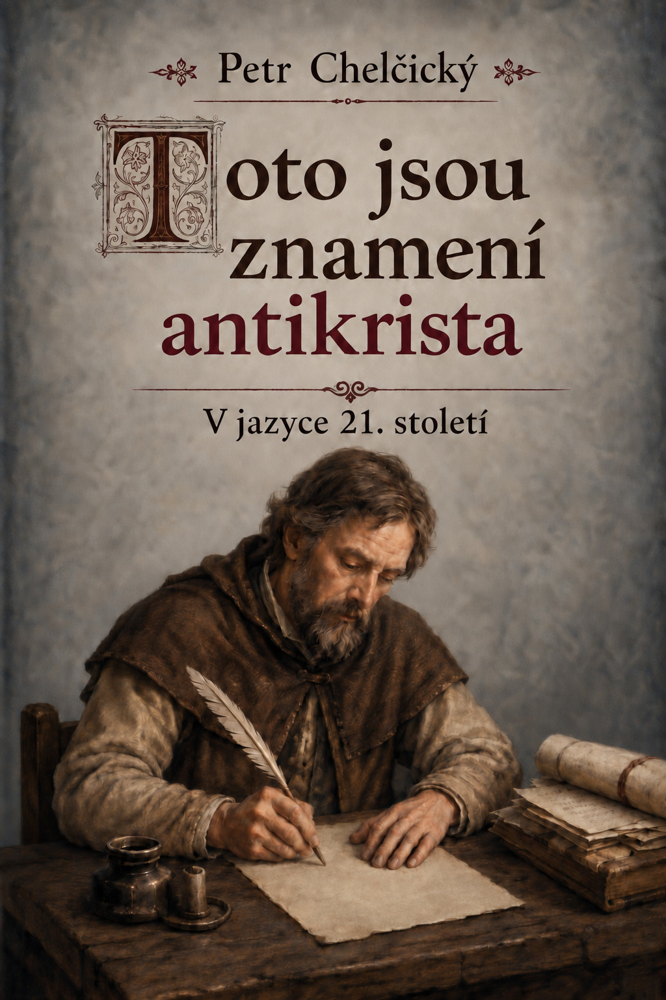

Úvod
Může být člověk proti Kristu, a přitom se ke Kristu hlásit? Může se dovolávat Písma, vystupovat jako Kristův služebník, a přece svým jednáním Krista popírat? Jak se může učení založené na lásce stát ospravedlněním útlaku a násilí? A lze pravé křesťanství rozeznat od jeho napodobenin?
Těmito otázkami se zabývá Chelčického traktát Toto jsou znamení antikrista. Jeho hlavní biblickou osnovu tvoří slova prvního Janova listu o těch, kdo jsou ze světa a mluví o světě, a o rozpoznávání ducha pravdy a ducha bludu (1 J 4,5–6). Tato slova Chelčický opakovaně spojuje s výroky Janova evangelia, zejména s výpověďmi o protikladu mezi Bohem a světem a mezi Kristem a jeho odpůrci.
Chelčický psal v době náboženských sporů a válek, v nichž se znepřátelené strany dovolávaly Boha a jeho pravdy. Samotné Kristovo jméno ani dovolávání se Písma však podle něj nezaručují pravdivost toho, kdo je používá. Cílem traktátu je proto ukázat znamení, podle nichž lze rozpoznat ducha pravdy a ducha bludu, zvláště když se klam skrývá pod podobou zbožnosti. Úvodní slovo „Potom“ naznačuje, že pojednání zřejmě navazuje na jeho Řeč o rozlišování duchů na ochranu před klamem.
Chelčický odmítá dobovou představu, že antikrist teprve jednou přijde jako jediná děsivá bytost. Podle něj antikrist již působí ve světě a projevuje se v mnoha lidech. Tento antikrist zpravidla Krista nepopírá otevřeně: naoko mu vzdává čest, mluví o Bohu, vykládá Písmo a nabízí lidem spasení. Kristovo učení však přizpůsobuje žádostem světa a z víry činí prostředek k získávání bohatství, vážnosti a moci. Jeho lež je nebezpečná právě proto, že přijímá podobu pravdy.
Tím Chelčický zároveň ukazuje, kde hledat kořen rozporů a válek mezi křesťany. Nespatřuje jej v Kristově učení, nýbrž ve spojení tohoto učení s touhou po světské moci. Jakmile se víra stane nástrojem panování, mohou lidé Kristovými slovy ospravedlňovat jednání, které je s jeho životem v rozporu.
Pravé křesťanství se proto podle Chelčického nepozná podle úřadu, obřadů, majetku ani souhlasu většiny, ale podle shody s Kristovým slovem a životem. Pro dnešního čtenáře by proto tento traktát neměl být seznamem protivníků, na něž lze ukázat, nýbrž znepokojivým zrcadlem. Vede každého k otázce, čemu jeho vlastní víra slouží a jaké ovoce přináší. Největší nebezpečí totiž nemusí být tam, kde lidé Krista otevřeně odmítají, nýbrž tam, kde se jeho jméno zachovává, zatímco jeho pravda, láska a způsob života jsou zbavovány své moci.